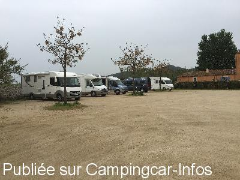
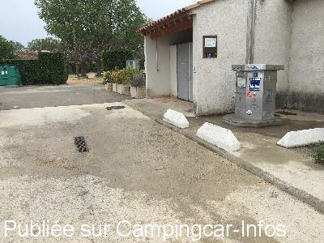
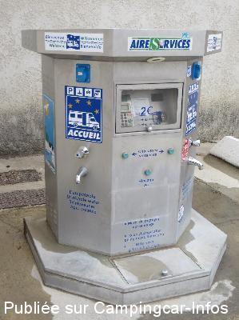
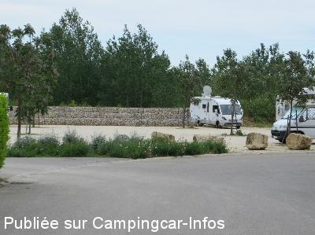
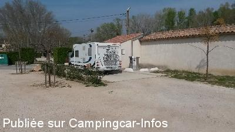

ASN = Aire de services avec stationnement nuit possible de :
COMPS
(N° 797)
Accès/adresse :
Place des Arènes
30300 COMPS
30300 COMPS
Latitude : (Nord) 43.85343° Décimaux ou 43° 51′ 12′′
Longitude : (Est) 4.6088° Décimaux ou 4° 36′ 31′′
Tarif : 2016
Stationnement, services : 6 €
Passage d'un agent pour l'encaissement
Type de borne : AIRESERVICES
Services :


Restauration
Supérette
Autres informations :
20 emplacements sur sol stabilisé

Le 21/04/2016 par Snoopy

Le 21/04/2016 par Snoopy

Le 14/05/2014 par jack38140

Le 14/05/2014 par jack38140

Le 22/04/2014 par jérôme
de
papé jack
le 04/04/2015 :
§le 4 avril 2015 l'aire est à présent à 6 euros.
Très propre et calme.
§le 4 avril 2015 l'aire est à présent à 6 euros.
Très propre et calme.
de
besnard jl 41
le 25/09/2014 :
de passage le 08/09: Accès un peu étroit. Deux endroits. Un a coté de l'aire de service (plat) et l'autre près du gardon (sous les peupliers atention en cas d'orage !). 5€ la nuit. On a pas payé vu personne !
de passage le 08/09: Accès un peu étroit. Deux endroits. Un a coté de l'aire de service (plat) et l'autre près du gardon (sous les peupliers atention en cas d'orage !). 5€ la nuit. On a pas payé vu personne !
de
Anemone 66
le 02/09/2014 :
Aire agréable, sur sol stabilisé pour un prix tout à fait raisonnable : 5 euros la nuitée qu'un employé municipal très gentil vient encaisser. Les services sont à 2 euros pour 10mn d'eau, 55mn d'électricité. De plus, merci à la mairie de nous l'indiquer par de multiples panneaux, y compris pour sortir. Encore un grand merci.
Il en faudrait beaucoup des comme celle-ci...
Aire agréable, sur sol stabilisé pour un prix tout à fait raisonnable : 5 euros la nuitée qu'un employé municipal très gentil vient encaisser. Les services sont à 2 euros pour 10mn d'eau, 55mn d'électricité. De plus, merci à la mairie de nous l'indiquer par de multiples panneaux, y compris pour sortir. Encore un grand merci.
Il en faudrait beaucoup des comme celle-ci...
de
Monique Fiani
le 22/08/2014 :
merci et bravo à la mairie de ce petit village de proposer une si agréable aire propreté et tranquillité.
Dommage par contre qu'il y ait si peu de commerces, surtout le dimanche matin, ouverts.
merci et bravo à la mairie de ce petit village de proposer une si agréable aire propreté et tranquillité.
Dommage par contre qu'il y ait si peu de commerces, surtout le dimanche matin, ouverts.
de
rjgca
le 15/06/2014 :
De passage après la féerie du pont du Gard, aire très propre et très calme
Le préposé passe à 8h30, très sympa
Le parking près du Gardon a un environnement plus agréable
Merci à la mairie
De passage après la féerie du pont du Gard, aire très propre et très calme
Le préposé passe à 8h30, très sympa
Le parking près du Gardon a un environnement plus agréable
Merci à la mairie
de
jack38140
le 14/05/2014 :
Nous avons passé la nuit du 7 au 8 mai 2014, très calme, promenade au bord du gardon.
Parfait, merci la Mairie.
Nous avons passé la nuit du 7 au 8 mai 2014, très calme, promenade au bord du gardon.
Parfait, merci la Mairie.
de
le 16/11/2013 :
aire très très agréable et très vaste. Outre un grand parking à côté des services (impeccable), de l'autre côté de la digue, un immense terrain au bord du gardon
Étape très agréable
aire très très agréable et très vaste. Outre un grand parking à côté des services (impeccable), de l'autre côté de la digue, un immense terrain au bord du gardon
Étape très agréable
de
pbl
le 28/10/2013 :
Passage début Octobre.
Il peut y avoir confusion entre la zone de stationnement là où sont les services et la zone tout au bord du Gardon, sous les arbres.
En cas de forte pluie (ce fut le cas), cette zone est vite gorgée d'eau et très boueuse.
Passage début Octobre.
Il peut y avoir confusion entre la zone de stationnement là où sont les services et la zone tout au bord du Gardon, sous les arbres.
En cas de forte pluie (ce fut le cas), cette zone est vite gorgée d'eau et très boueuse.
de
Famille Fibicher
le 20/10/2013 :
Bonjour à tous, passage le 17.10.2013, avons passé une nuit dès plus agréables sur cette aire. Arbres, lumière, soleil, rivière, tout était au rdv !
Accueil tout à fait chaleureux au village, où vous trouverez sur la Place un mini-restauration. Un jeune couple tout à fait charmant vient d'y ouvrir ses portes... pizzas et salade à l'emporter, rapport qualité prix = honnête.
Le gendarme vient effectivement encaisser les 3 Euros le matin... au vue de la propreté du site, c'est bien volontiers.
Bonjour à tous, passage le 17.10.2013, avons passé une nuit dès plus agréables sur cette aire. Arbres, lumière, soleil, rivière, tout était au rdv !
Accueil tout à fait chaleureux au village, où vous trouverez sur la Place un mini-restauration. Un jeune couple tout à fait charmant vient d'y ouvrir ses portes... pizzas et salade à l'emporter, rapport qualité prix = honnête.
Le gendarme vient effectivement encaisser les 3 Euros le matin... au vue de la propreté du site, c'est bien volontiers.
de
le 02/12/2012 :
beau parking au bord du gardon . calme et bien situé Possibilités de ballades ou de randonnées le long de la rivière. Commerces de 1ères nécessités au village .
Panneaux d'indication pour CC pour entrer ou sortir du village .
beau parking au bord du gardon . calme et bien situé Possibilités de ballades ou de randonnées le long de la rivière. Commerces de 1ères nécessités au village .
Panneaux d'indication pour CC pour entrer ou sortir du village .
de
Michel&Maée
le 19/12/2011 :
En effet, l'aire est sympa mais le stationnement en bordure du gardon semble interdit si l'on en croit les affiches mises en évidence. Reste à braver la règlementation locale comme nous l'a indiqué un pêcheur du coin qui assure que l'été, le bord de rivière est rempli de campings cars ! en saison de pluies, gare aux innondations dont la ville s'est protégée par de vastes murailles et de surcroit sur ce genre de berges. Propriétaires de gros volumes, l'accès est compliqué car il faut traverser le village et de toutes petites rues.
En effet, l'aire est sympa mais le stationnement en bordure du gardon semble interdit si l'on en croit les affiches mises en évidence. Reste à braver la règlementation locale comme nous l'a indiqué un pêcheur du coin qui assure que l'été, le bord de rivière est rempli de campings cars ! en saison de pluies, gare aux innondations dont la ville s'est protégée par de vastes murailles et de surcroit sur ce genre de berges. Propriétaires de gros volumes, l'accès est compliqué car il faut traverser le village et de toutes petites rues.
de
coco
le 26/08/2010 :
De passage a comps le week-end du 15 août, nous avons passe 3 jours formidables. L'aire est très bien, ombragée, au bord du Gardon, calme et gratuite. Quant à l'eau, le tarif est de 4€ mais vous donne aussi le droit à 55 mn d'électricité. Merci infiniment à la mairie pour cet accueil et merci aussi aux villageois qui ont le sens de la fête et de l'accueil, nous y reviendrons, c'est sûr. §
De passage a comps le week-end du 15 août, nous avons passe 3 jours formidables. L'aire est très bien, ombragée, au bord du Gardon, calme et gratuite. Quant à l'eau, le tarif est de 4€ mais vous donne aussi le droit à 55 mn d'électricité. Merci infiniment à la mairie pour cet accueil et merci aussi aux villageois qui ont le sens de la fête et de l'accueil, nous y reviendrons, c'est sûr. §
de
MICO
le 30/11/2007 :
En effet, pour stationner au bord de l'eau, vous pouvez toujours traverser les arènes, mais il existe maintenant une nouvelle et superbe aire de stationnement et services, bien fléchée.
En effet, pour stationner au bord de l'eau, vous pouvez toujours traverser les arènes, mais il existe maintenant une nouvelle et superbe aire de stationnement et services, bien fléchée.
de
Sophie HESSEL
le 15/10/2006 :
Nous avons fait une halte sur l'aire de Comps début juillet, super emplacement, au calme et très agréable, aire à recommander
Nous avons fait une halte sur l'aire de Comps début juillet, super emplacement, au calme et très agréable, aire à recommander